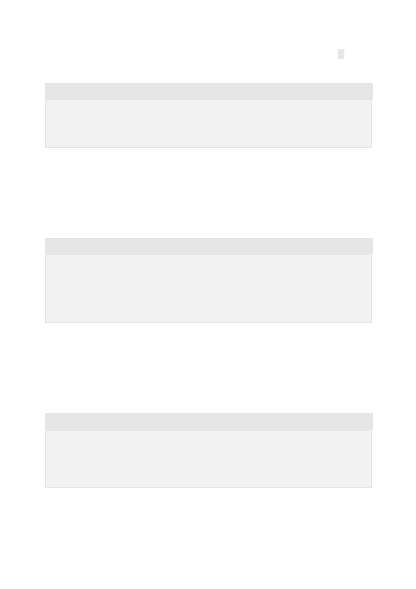

With some languages, the style of comments can improve the quality of the output. For
example, when working with Python, in some cases using doc strings (comments
wrapped in triple quotes) can give higher quality results than using the pound (#)
symbol.
Python
Recommended coding standards usually suggest placing the description of a function
inside the function. Using this format helps Codex more clearly understand what you
want the function to do.
Python
If you have a particular style or format you need Codex to use, providing examples or
demonstrating it in the first part of the request will help Codex more accurately match
what you need.
Python
Setting the API temperature to 0, or close to zero (such as 0.1 or 0.2) tends to give
better results in most cases. Unlike GPT-3 models, where a higher temperature can
"""
Create an array of users and email addresses
"""
Comments inside of functions can be helpful
def getUserBalance(id):
"""
Look up the user in the database ‘UserData' and return their current
account balance.
"""
Provide examples for more precise results
"""
Create a list of random animals and species
"""
animals = [ {"name": "Chomper", "species": "Hamster"}, {"name":
Lower temperatures give more precise results